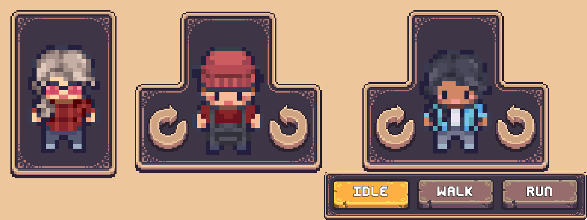

Character Preview
The character preview shows a live view of the character the player is customizing. Whenever a layer of the character is modifed, the preview is refreshed automatically.
Prefabs
Prefabs offer easy implementation of character previews without the need to set them up yourself.
Prefabs Location: Prefabs > Character Creator > Character Preview.
Pre-Setup Prefabs
Within the Pre-Setup subfolder are three prefabs all completely setup and ready for use. Drag and drop them into your Character Creation Menu and they're ready, no other setup needed.
The included prefabs are as follows:
- Character Preview - Shows an animated preview of the character with no other controls.
- Character Preview [+Rotation Controls] - Includes buttons on the left and right to rotate the character.
- Character Preview [+Rotation Controls, Anim Buttons] - Includes rotation controls and buttons at the bottom to switch the animation the character is playing.

Animation Buttons Prefabs
The same animation buttons included in the third Pre-Setup prefab are also contained in their own subfolder. This subfolder contains 4 variations in total. These variations only differ in the sprites used. Any of these variations can be swapped out in the Pre-Setup prefab.
Manual Setup
Prefer to create a Character Preview from scratch? Here's how to do that.
Step 1
Create a new GameObject within the Character Creation Menu contents and add the CCM Character Preview Handler component. This is the component responsible for initializing and updating your character preview.
Step 2
Select the Preview Mode.
The Preview Mode determines how the character preview is displayed.
- Static
- Uses the Character Preview Sprite assigned in the Character Creator Settings section of the Layered Character Type.
- Animated
- Uses the Character Preview Controller assigned in the Character Creator Settings section of the Layered Character Type to animate the character preview.
If Animated is selected, assign the Character Animator, this is the Animator component the Animator Controller will be assigned to.
Step 3
Assign the Character Image. This is the Image component that the Character Shader will be applied to.
Now once you enter play mode you'll see the character being edited displayed in the preview you just created.
Adding Rotation Controls
To add buttons to rotate the character preview with follow these steps:
- Create a new GameObject
- Add the Unity Button component
- Assign the Buttons On Click event to the
CCMCharacterPreviewHandlercomponent and call theRotateCharacterPreview()method. - The
RotateCharacterPreview()requires a bool, disabled = rotate left, enabled = rotate right.